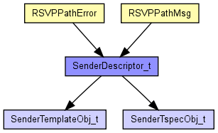
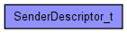

Intserv/RSVP: Sender Descriptor Structure
The following diagram shows usage relationships between types. Unresolved types are missing from the diagram. Click here to see the full picture.
The following diagram shows inheritance relationships for this type. Unresolved types are missing from the diagram. Click here to see the full picture.
| Name | Type | Description |
|---|---|---|
| Sender_Tspec_Object | SenderTspecObj_t | |
| Sender_Template_Object | SenderTemplateObj_t |
// // Intserv/RSVP: Sender Descriptor Structure // struct SenderDescriptor_t { SenderTemplateObj_t Sender_Template_Object; SenderTspecObj_t Sender_Tspec_Object; }